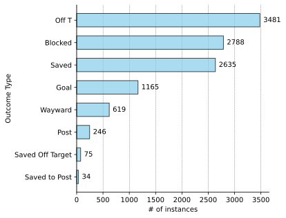

Prediction of a goal outcome in soccer is a binary classification task { 0 - No goal ; 1 - Goal }. However, the key point to note is that, in xG model, we are not dealing with hard classes but rather trying to make a probabilistic prediction for a shot outcome. In comparison with hard classes, probabilistic outputs allow to describe the quality of shot since not all shots are equally probable to be scored. In other words, given a shot, how likely it is to result into a goal. This is what xG value estimates for a given shot.
As you can see from below code snippet, there are different outcome types for a given shot such as Saved, Off target, shot that hit Post, Blocked, way off target Wayward shot and etc. To build a binary probabilistic classifier, it is necessary for us to define predictions as hard classes. Here, I convert each value of outcome_type column to 1 for Goal scenario or 0 for the rest of scenarios.
Code
shots.loc[:, 'outcome'].unique()
array(['Saved', 'Off T', 'Post', 'Goal', 'Blocked', 'Wayward',
'Saved Off Target', 'Saved to Post'], dtype=object)
Code
# rename existing 'outcome' column to 'outcome_type' shots = shots.rename(columns = {'outcome': 'outcome_type'})# save binary results into a newly created 'outcome' columnshots.loc[:, 'outcome'] = shots.loc[:, 'outcome_type'].apply(lambda x: 1if x =='Goal'else0)shots.loc[:, 'outcome']
Now, let us analyze the types of available shots and their frequencies. From Figure 1, it can be seen that our dataframe has a data on 11043 shots. As we can see below, 1165 of them resulted into a goal.
Code
# Data preparationshot_types = pd.DataFrame(shots.loc[:, 'outcome_type'].value_counts()).reset_index()shot_types.columns = ['outcome_type', 'n']shot_types = shot_types.sort_values(by ='n', ascending =True)# Canvasfig, ax = plt.subplots(figsize = (5, 5))# grid specsax.grid(color ='black', ls ='-.', lw =0.25, axis ="x")# Main plotpl = ax.barh(shot_types["outcome_type"], shot_types["n"], height =0.6, label ='n', color ='skyblue', edgecolor ="black", zorder =2, alpha =0.7) # Barplot labelsax.bar_label(pl, padding =5, label_type='edge')# Labels and titlesax.set_ylabel("Outcome Type", fontsize =10)ax.set_xlabel("# of instances", fontsize =10)ax.tick_params(axis ='both', which ='major', labelsize =10)ax.set_title("", loc ="left", pad =1, fontdict = font)ax.spines[['top', 'right']].set_visible(False)plt.show()

Figure 1: Distribution of shot outcomes across female soccer competitions.
To sum up, we can see that the majority of shots are off target, blocked or saved. Since only 1165 out of 11043 shots are goals, we can conclude that our data is imbalanced. This will affect our choice of model evaluation metric, later in the model selection phase.
Figure 2: Distribution of shots according to their coordinates.
The majority of shots is made in the central block of the final third area. In addition, there are several outlying shots made from a central area and flang positions. On the right flang, some of outliers even resulted into a Goal.
Feature Engineering
When it comes to the analysis of a shot made by a player, one can even intuitively predict whether that shot will have a decent outcome or not. In practice, there are two major factors which drive that intuition and can be actually quantified. These are distance to a goal and angle under which a shot was implemented.
Figure 3: Different distance to goal (solid line) and angle (shaded area) for a given shot.
Distance & Angle Features
To demonstrate an impact of distance and angle features on a probability of a shot resulting into a goal, I evaluate these features from a given (x, y) coordinate of each shot and build a simple logistic regression that makes probabilitistic predictions.
To evaluate distance to the goal, I calculate euclidean distance between (x, y) coordinate of a shot and goal centerline. Since I work with Statsbomb data, I use their pitch dimensions which are [0, 120] on x axis and [0, 80] on y axis. Thus, goal centerline coordinates are (120, 40).
Below, you can see my implementation:
# Distance Feature calculation# define goal center for 'statsbomb'goal_center = np.array([120, 40])# calculate distance between a shot coordinate and goal centerline coordinateshots['distance'] = np.sqrt((shots['x_start'] - goal_center[0])**2+ (shots['y_start'] - goal_center[1])**2)shots['distance'] = shots['distance'].round(decimals =2)
Next, I calculate an angle of a shot. The task breaks down to finding an angle between two sides of a triangle given that all lengths (a, b, c) of a triangle are known.
Below, you can see my implementation:
# Angle Feature calculation# transform (x, y) coordinates from percentiles to field length coordinates (105 meters x 68 meters)x = shots['x_start'] *105/120y = shots['y_start'] *68/80# Use trigonometric formula to find an angle between two sides (a,b) of a triangle where the third side (c) # is a goal line of length 7.32 meters.a = np.sqrt((x -105)**2+ (y -30.34)**2) # length between right post and (x, y) shot coordinateb = np.sqrt((x -105)**2+ (y -37.66)**2) # length between left post and (x, y) shot coordinatec =7.32# goal line length in meterscos_alpha = (a**2+ b**2- c**2)/(2*a*b)cos_alpha = np.round(cos_alpha, decimals =4)# remember to leave angle in radians (if you want to transfer to degree multiply cos_alpha by 180/pi)shots['angle'] = np.arccos(cos_alpha)
Now, I would like to demonstrate how both of these features impact probability of scoring.
I run a simple logistic regression that includes only these features (distance, angle) and obtain probabilisitc predictions for each shot. Then, I plot both of these features against my probabilistic predictions to visualize the relationship. The goal here is to illustrate relationship between our features and probability of scoring.
Code
from sklearn.model_selection import train_test_splitfrom sklearn.linear_model import LogisticRegression# Prepare features and labels from available dataX = shots.loc[:, ['distance', 'angle']]y = shots.loc[:, 'outcome']# Fit Logistic Regression Modelclassifier = LogisticRegression()classifier.fit(X, y)# make predictionspredictions = classifier.predict_proba(X)[:, 1]# Canvasfig, ax = plt.subplots(nrows =1, ncols =2, figsize = (10, 4))# Distance plot design# gridax[0].grid(color ='black', ls ='-.', lw =0.25, axis ="both")# plotax[0].scatter(X['distance'], predictions, color ='gray', s =0.5, alpha =0.4)ax[0].set_xlabel('Distance')ax[0].set_ylabel('Probability of scoring')# axis adjustmentsax[0].set_ylim(0, 0.8)ax[0].set_xlim(0, 90)ax[0].yaxis.get_major_ticks()[0].label1.set_visible(False)ax[0].tick_params(length =0)############################################# Angle plot design# gridax[1].grid(color ='black', ls ='-.', lw =0.25, axis ="both")# plotax[1].scatter(X['angle'], predictions, color ='orange', s =0.5, alpha =0.4)ax[1].set_xlabel('Angle')ax[1].set_ylabel('Probability of scoring')# axis adjustmentsax[1].set_ylim(0, 0.8)ax[1].set_xlim(0, 3.5)ax[1].yaxis.get_major_ticks()[0].label1.set_visible(False)ax[1].tick_params(length =0)ax[0].text(x =44, y =-0.2, s ='a)', fontsize =12)ax[1].text(x =1.72, y =-0.2, s ='b)', fontsize =12)plt.show()
Figure 4: Probability of scoring decreases with increasing distance (a) and increases with increasing angle (b).
As it can be seen from a) part of Figure 4, indeed, probability of scoring (or you can also call it xG value) decreases exponentially with increasing distance. On the contrast, probability of scoring increases linearly with increasing angle.
In both plots of Figure 4, there are densely populated parts that can be analyzed in a slightly different way. These are the areas from where majority of shots is executed. When analyzing Figure 5, we can observe that most of the shots are executed within a distance range of 5 to 30 meters. Similarly, most of the angles of executed shots are distributed within 0 to 60 degrees (0 to 1 radians respectively).
Code
# Canvasfig, ax = plt.subplots(nrows =1, ncols =2, figsize = (10, 4))# Distance density plot designax[0].grid(color ='black', ls ='-.', lw =0.25, axis ="both")sns.kdeplot(x ='distance', data = shots, ax = ax[0], color ='gray')ax[0].set_xlabel('Distance')ax[0].set_ylim(0, 0.045)ax[0].set_yticks(np.arange(0, 0.045, 0.01))ax[0].set_xlim(-10, 100)# Angle density plot designax[1].grid(color ='black', ls ='-.', lw =0.25, axis ="both")sns.kdeplot(x ='angle', data = shots, ax = ax[1], color ='orange')ax[1].set_xlabel('Angle')ax[1].set_ylim(0, 2.8)ax[0].text(x =44, y =-0.01, s ='a)', fontsize =12)ax[1].text(x =1.5, y =-0.63, s ='b)', fontsize =12)plt.show()
Figure 5: Distribution of distances (a) and angles (b) for all executed shots.
Statistical Analysis
I run a logistic regression including all features that could help me understand the statistical signficance of these features. My intention is to analyze p-values for each of the features, and determine which of those values are weakly associated with the response.
Optimization terminated successfully.
Current function value: 0.284721
Iterations 8
p-value
Intercept
0.000
body_part[T.Left Foot]
0.000
body_part[T.Other]
0.642
body_part[T.Right Foot]
0.000
play_pattern_name[T.From Counter]
0.001
play_pattern_name[T.From Free Kick]
0.000
play_pattern_name[T.From Goal Kick]
0.000
play_pattern_name[T.From Keeper]
0.203
play_pattern_name[T.From Kick Off]
0.239
play_pattern_name[T.From Throw In]
0.001
play_pattern_name[T.Other]
0.252
play_pattern_name[T.Regular Play]
0.000
distance
0.000
angle
0.000
under_pressure
0.056
gk_loc_y
0.431
gk_loc_x
0.000
open_goal
0.000
There are several categorical variables which have very high p-values. These are body_part[T.Other], play_pattern_name[T.From Keeper], play_pattern_name[T.From Kick Off], play_pattern_name[T.Other] and gk_loc_y. Let us analyze those features and consider if we can leave them out of our model.
First, there is a play_pattern_name column that describes different types of play during which a shot was executed. As it can be seen from below code snippet, there are in total 9 types of play.
# Data preparation for barplot 1play_types = pd.DataFrame(shots.loc[:, 'play_pattern_name'].value_counts()).reset_index()play_types.columns = ['play_pattern_name', 'n']play_types = play_types.sort_values(by ='n', ascending =True)# Data preparation for barplot 2body_part = pd.DataFrame(shots.loc[:, 'body_part'].value_counts()).reset_index()body_part.columns = ['body_part', 'n']body_part = body_part.sort_values(by ='n', ascending =True)# Canvasfig, ax = plt.subplots(nrows =1, ncols =2, figsize = (4, 4))# Grid specsax[0].grid(color ='black', ls ='-.', lw =0.25, axis ="x")# Main plotpl = ax[0].barh(play_types["play_pattern_name"], play_types["n"], height =0.6, label ='n', color ='skyblue', edgecolor ="black", zorder =2, alpha =0.7) # Barplot labelsax[0].bar_label(pl, padding =5, label_type='edge')# Labels and titlesax[0].set_ylabel("Type of Play", fontsize =10)ax[0].set_xlabel("# of instances", fontsize =10)ax[0].tick_params(axis ='both', which ='major', labelsize =10)ax[0].set_title("", loc ="left", pad =1, fontdict = font)ax[0].spines[['top', 'right']].set_visible(False)############################################################################## Grid specsax[1].grid(color ='black', ls ='-.', lw =0.25, axis ="x")# Main plotpl2 = ax[1].barh(body_part["body_part"], body_part["n"], height =0.4, label ='n', color ='red', edgecolor ="black", zorder =2, alpha =0.7) # Barplot labelsax[1].bar_label(pl2, padding =5, label_type='edge')# Labels and titlesax[1].set_ylabel("Body part", fontsize =10)ax[1].set_xlabel("# of instances", fontsize =10)ax[1].tick_params(axis ='both', which ='major', labelsize =10)ax[1].set_title("", loc ="left", pad =1, fontdict = font)ax[1].spines[['top', 'right']].set_visible(False)# Set the spacing parameters between subplotsplt.subplots_adjust(left =0.1, bottom =1.3, right =2, top =2, wspace =0.65, hspace =0.5)plt.show()
Figure 6: Distribution of shots in different types of play (left) and implemented with different parts of a body (right).
Features play_pattern_name[T.From Keeper], play_pattern_name[T.From Kick Off], play_pattern_name[T.Other] that received high p-values are actually very rare events and can be considered as outliers in our model. There are very few situations in which attack starting from goalkeeper or from a kick-off can result into a goal. From Figure 6, it can be seen that in total 300 shots were executed in types of play: From Keeper, From Kick Off and Other.
Code
print(np.sum(shots.loc[shots['play_pattern_name'] =='From Keeper', 'outcome']), 'goals were scored when attack was initiated from goal keeper.',)
13 goals were scored when attack was initiated from goal keeper.
Code
print(np.sum(shots.loc[shots['play_pattern_name'] =='From Kick Off', 'outcome']),'goals were scored when attack was initiated from kick-off.')
10 goals were scored when attack was initiated from kick-off.
Code
print(np.sum(shots.loc[shots['play_pattern_name'] =='Other', 'outcome']),'goals were scored when attack was initiated from other scenarios.')
7 goals were scored when attack was initiated from other scenarios.
In total, only 30 out of those 300 shots were scored.
Similar pattern can be observed when analyzing body_part categorical column and body_part[T.Other] feature that received a high p-value in our logistic regression. Out of 11043 shots available in our dataset, only 30 shots were executed with a body part other than foot or head.
Code
print('Only', np.sum(shots.loc[shots['body_part'] =='Other', 'outcome']),'goals out of 30 shots were scored when body part other than foot or head.')
Only 6 goals out of 30 shots were scored when body part other than foot or head.
To sum up both of these scenarios, we see that there are only 330 shots and 36 goals which fall into this outlying conditions. This is a relatively small sample size in comparison to the available data, thus, I exclude this data points from the dataset.
Finally, there is one more column gk_loc_y which also has a high p-value. This column together with gk_loc_x describe a location of opposing teams goalkeeper during an executed shot. Naturally, a goalkeeper standing on the goal line can move differently but in most of the cases along the goal line. This means that her/his y coordinate should change much more frequently than x coordinate. However, what we see is that y coordinate is less significant in our model than x coordinate. As of now, I will leave both of these features in the dataset.
Transforming and Splitting Data
One-hot encoding transformation is applied to all categorical variables present in the dataset. These are body_part, technique and play_pattern_name. Note that variables under_pressure, follows_dribble, first_time and open_goal are already transformed 0/1 boolean variables (False/True), thus, they do not need any additional preprocessing. In addition, features distance, angle, gk_loc_x and gk_loc_y are standardized.
Code
from sklearn.model_selection import train_test_split# Prepare features and labels from available dataX = shots.loc[:, ['play_pattern_name','under_pressure', 'distance', 'angle', 'gk_loc_x', 'gk_loc_y','follows_dribble', 'first_time', 'open_goal', 'technique', 'body_part']]y = shots.loc[:, 'outcome']# split dataX_train, X_test, y_train, y_test = train_test_split(X, y, test_size =0.2, random_state =42)
In the next section, model selection will be implemented using RandomizedSearchCV. Thus, our dataset is splitted into X_train, y_train, X_test, y_test where k-fold cross validation will be applied on X_train, y_train to find optimal parameters for each type of model. Finally, each model will be run on X_test, y_test to evaluate its performance on a new data.
Three different classifiers were run and evaluated on a given dataset. These are Logistic Regression, Gradient Boosting and Random Forest. Since I am interested in predicting probabilistic outputs, the aim is achieve the highest accuracy for probability values. Thus, I use Brier score as an evaluation metric in RandomizedSearchCV. In addition to that, I also evaluate ROC-AUC score for each model with its best parameters. However, ROC-AUC is mainly used here as a supportive metric to illustrate relative performance in comparison to a random guess.
To sum up, when comparing Brier scores for each of classifiers, it can be seen that Logistic Regression outperforms Gradient Boosting and Random Forest by a small margin. In addition, Logistic Regression also demonstrates the highest ROC-AUC value 0.781. This value is well above 0.5 which proves that the classifier performs much better than a random guess.
Future Improvements
The model illustrates a decent performance. However, there are always areas for improvement that I would like to briefly outline:
More thorough analysis of opposing teams goalkeeper coordinates.
Analyze how discarded outliers may affect model performance.
Analyze correlation between features using different techniques such as point biserial correlation and chi square test of association.
Use location of opposing teams defenders to construct additional features.